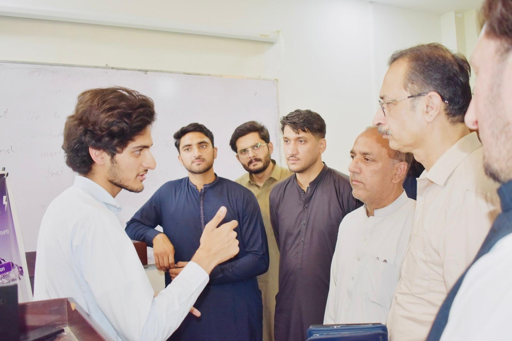

Bachelor of Science in Computer Science
Iqra National University, Swat Campus
CGPA: 3.54 / 4.00
Computer Science · AI · Research
A concise showcase of my research work, technical projects, frontend skills, and academic profile.

About
I build applied machine learning systems, research projects, and practical web interfaces with a focus on clarity and reliability.
The portfolio keeps the content direct, credible, and easy to review, while still presenting the work in a polished way.
Education
Iqra National University, Swat Campus
CGPA: 3.54 / 4.00
Govt. P.G. Jehanzeb College, Swat
Marks: 866 / 1100
Al-Azhar Educational Institute, Swat
Marks: 975 / 1100
Official transcripts and attested certificates are available upon request for verified academic or professional evaluation.
Projects
Bidirectional LSTM sequence model using ERA5 atmospheric features, focal loss, class balancing, and a Flask dashboard for near real-time cloudburst risk prediction.
An applied drought-risk monitoring system for Swat Valley using live weather data, engineered hydroclimate features, and a Flask dashboard with forecast views.
End-to-end data pipeline and dashboard project using Python, SQL, and Power BI to analyze purchases, retention, and revenue behavior.
Interactive Power BI dashboard analyzing ride bookings, revenue, trip patterns, vehicle types, and pickup-drop insights.
SQL database project for cleaning, querying, and analyzing retail sales data to support business questions and reporting.
Research
The core project predicts cloudburst risk for Babusar Top using time-sequenced atmospheric data and a Bidirectional LSTM model. The system includes preprocessing, training, deployment, and a live dashboard experience.

Research projectCloudburst · FYP
A research-led forecasting system designed to identify cloudburst risk from atmospheric signals and support clearer, faster decisions in high-risk regions.
Explore the repositoryThe drought project monitors risk across Swat Valley and nearby locations using live weather data from the Open-Meteo API, engineered hydroclimate features, and a trained machine learning classifier. It provides current drought risk, regional comparisons, hotspot rankings, and forecast outlooks through a Flask-based dashboard.
Credentials
Packt via Coursera · Aug 27, 2025
University of Michigan via Coursera · Aug 26, 2025
University of Michigan via Coursera · Jul 8, 2025
Cisco Networking Academy · Jul 1, 2026
Verification details available from the issuer record.Contact